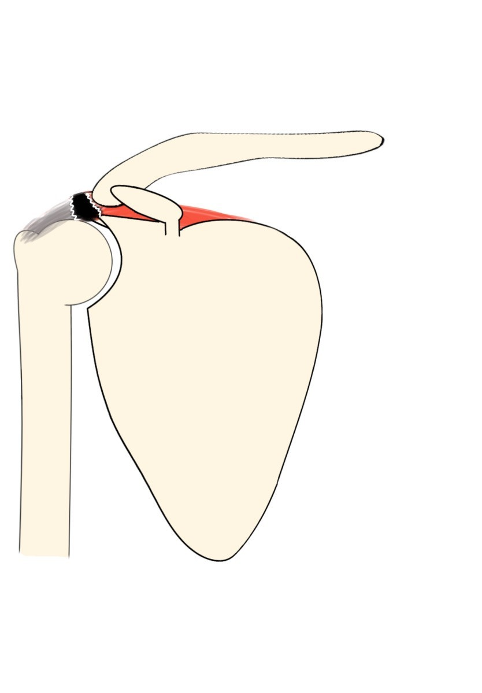
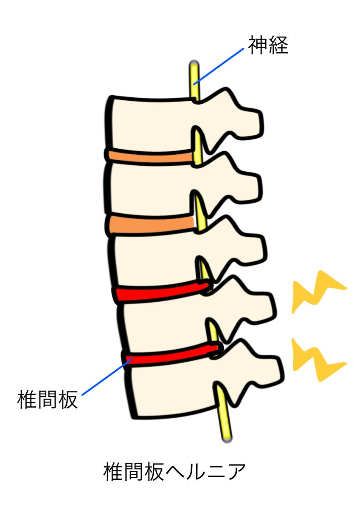
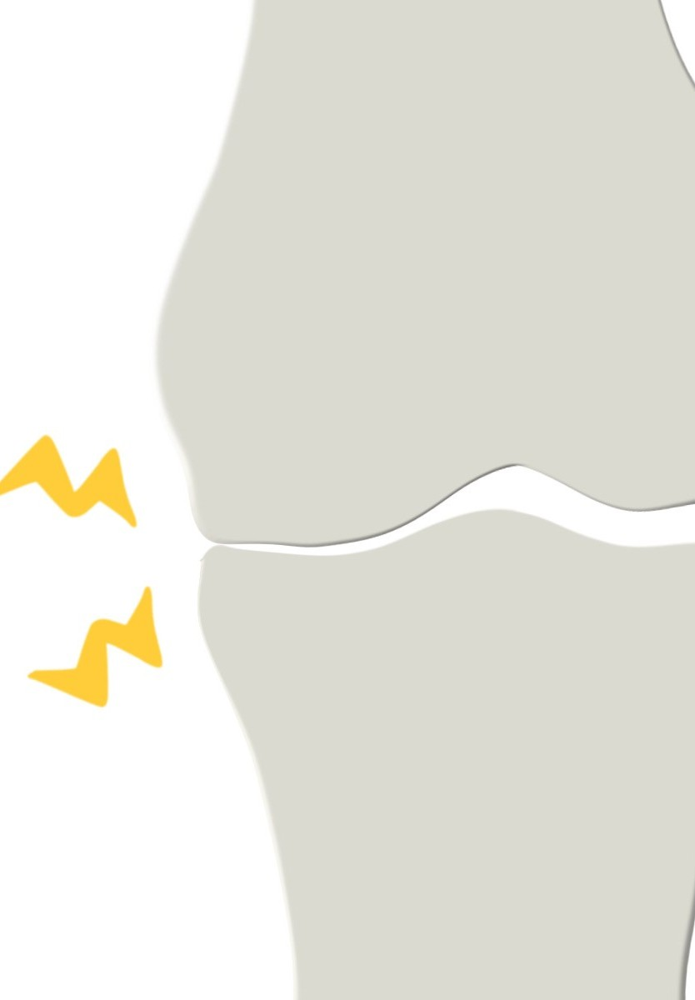
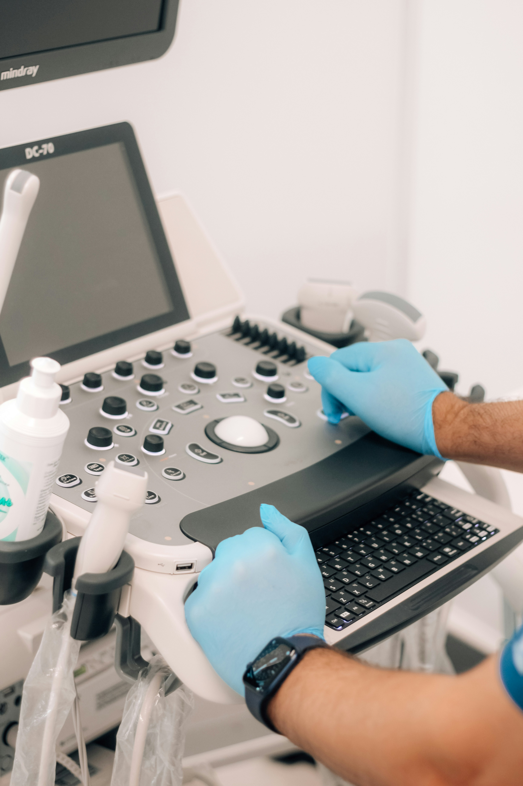
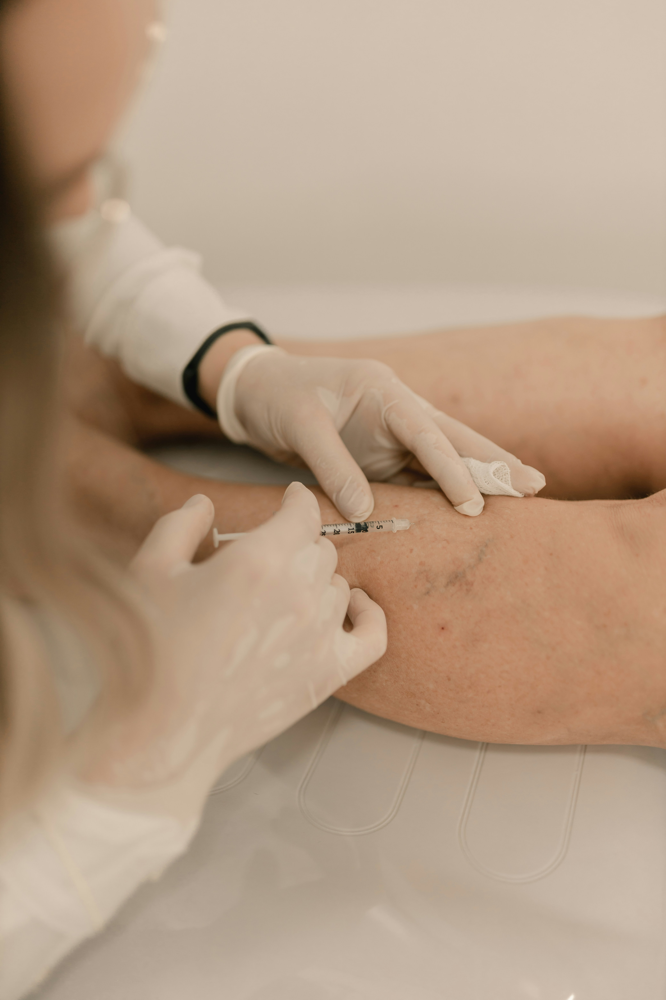

院長挨拶
当院整形外科では、地域の皆さまの「動く喜び」を支えることを使命としています。
けがや痛みの治療はもちろん、予防やリハビリにも力を入れ、年齢やライフスタイルに応じた最適な医療を提供します。
地域の健康づくりを目指し、医療講演会や運動指導などを通じて、人と人との絆を深めています。
これからも、皆さまが安心して相談できる「身近な整形外科」として、地域とともに歩み続けてまいります。
対象疾患例と治療法
腱板断裂
腱板断裂とは、肩関節の安定性と運動を支える腱板（棘上筋・棘下筋・小円筋・肩甲下筋）に損傷が生じた状態です。
加齢による変性や繰り返しの負荷、外傷などが主な原因で、肩の痛み・運動制限・夜間痛などを引き起こします。
治療は断裂の程度や症状によって選択されます。
保存療法では、軽度の場合はリハビリや鎮痛剤、ステロイド注射などで痛みの軽減と機能改善を図ります。
生活動作に支障がなければ十分な効果が期待できます。
完全断裂や保存療法で改善しない場合は、内視鏡（関節鏡）による縫合術が一般的です。
術後はリハビリを通じて徐々に機能回復を目指します。

椎間板ヘルニア
椎間板ヘルニアとは、背骨の椎骨間にある「椎間板」が変性し、その中の髄核が外に飛び出すことで、近くの神経を圧迫し痛みやしびれを引き起こす疾患です。
多くは腰椎に発生し、長時間の座位や重いものを持つ動作、加齢などが原因となります。
症状は腰痛、足のしびれや筋力低下などがあり、悪化すると歩行困難になることもあります。
保存療法：多くは、安静・理学療法・薬物療法（消炎鎮痛薬など）を中心に症状の緩和を図ります。
神経ブロック：痛みが強い場合、局所麻酔薬などを用いた注射で神経の炎症を抑えます。
手術療法：保存療法で改善が見込めない、または運動障害が強い場合はヘルニアを除去する手術が行われます。

変形性膝関節症
変形性膝関節症とは、膝関節の軟骨がすり減ることで、関節の変形・炎症が起こり、痛みや動きにくさを引き起こす疾患です。
加齢、肥満、過去の膝のケガなどが主な原因で、中高年に多くみられます。
初期は立ち上がりや歩行時の違和感から始まり、進行すると階段の昇降や正座が困難になり、日常生活に支障を来すことがあります。
保存療法：運動療法や筋力強化、体重管理により膝への負担を減らします。鎮痛薬やヒアルロン酸の関節注射も行われます。
装具療法：膝を支えるサポーターやインソールを使用して痛みを軽減します。
手術療法：重度の場合は人工関節置換術が検討され、術後はリハビリを通じて機能回復を図ります。

当院の設備
MRI検査

MRI（磁気共鳴画像法）は、強力な磁場と電波を使って、体内の臓器や組織を高精細に映し出す検査法です。
放射線を使わず、脳・脊髄・関節などの詳細な情報が得られるため、病気の診断や治療方針の決定に役立ちます。
エコー検査

エコー検査（超音波検査）は、高周波の音波を使って体内の構造をリアルタイムで映し出す安全な検査法です。
骨、関節、筋肉などの観察に用いられ、痛みや放射線の心配がありません。
関節内注射

関節内注射は、薬剤を直接関節の中に注入する治療法で、炎症や痛みの緩和に効果があります。
主に変形性関節症や関節リウマチなどで使われ、ステロイドやヒアルロン酸などが使用されます。
即効性があり、機能改善を目指す治療です。